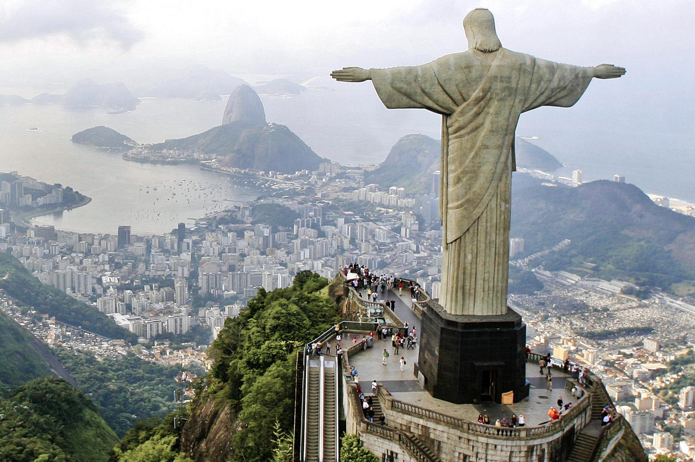

Why Rio?
Rio de Janiero, "Cidade Maravilhosa," meaning the "Marvelous City"
"Cultural Heritage Nestled between rolling green mountains and the vastness of the Atlantic Ocean, Rio de Janeiro is a renowned for its cultural heritage. Often referred to as the ‘Cidade Maravilhosa’ or ‘Marvellous City,’ Rio boasts iconic landmarks that serve as architectural symbols of its rich historical and cultural legacy. The Christ the Redeemer statue and Sugarloaf Mountain, both UNESCO World Heritage sites, stand as testament to the city’s enduring heritage."